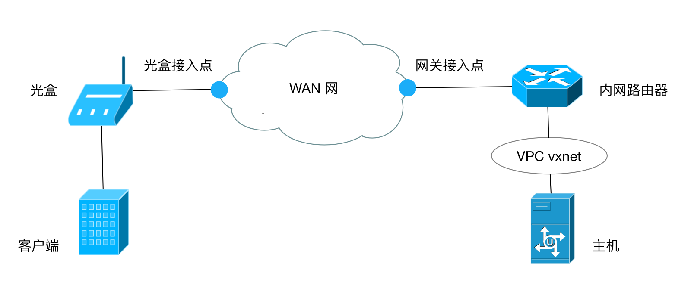
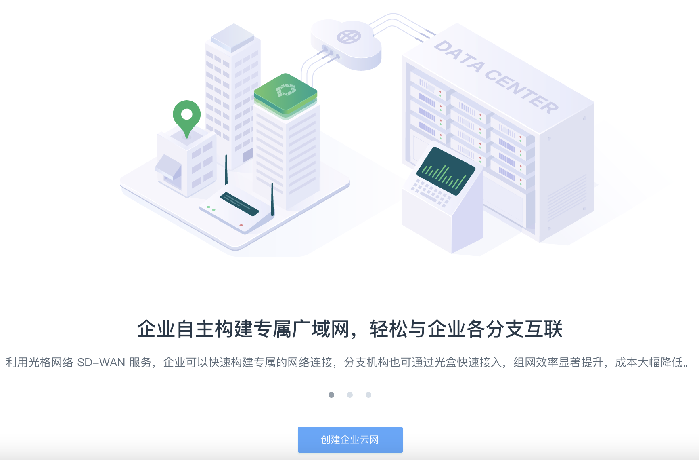
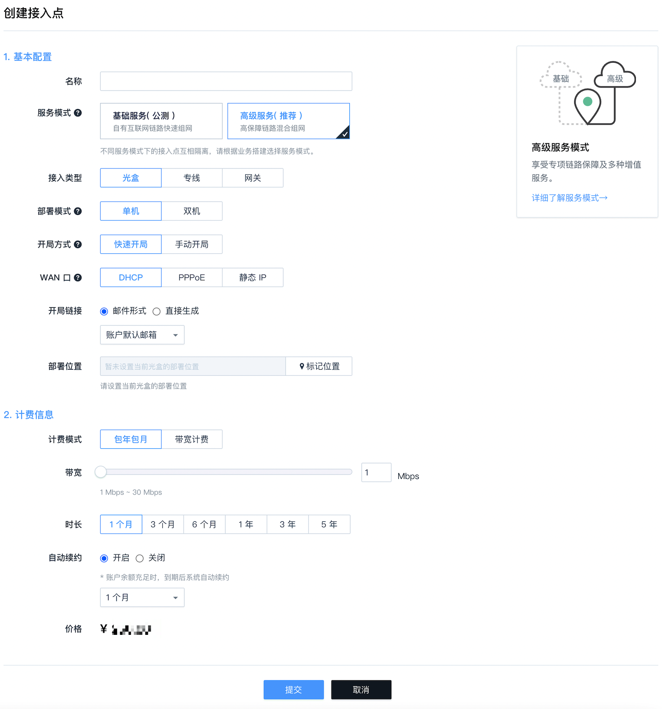
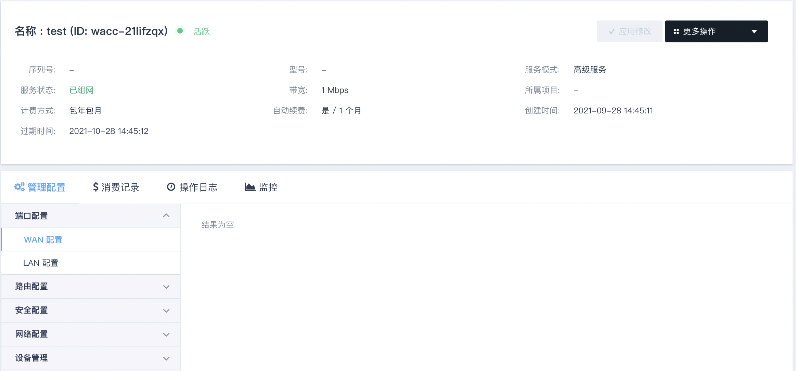
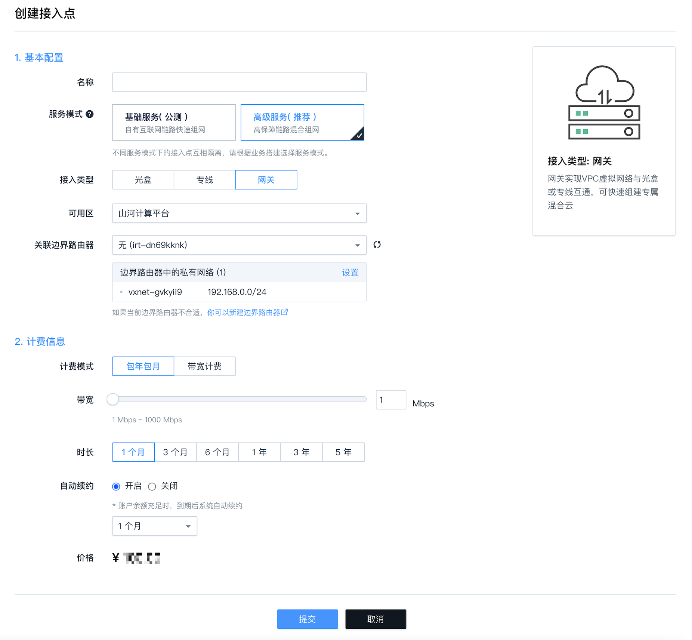

光盒连 VPC
本篇指南旨在帮助用户使用光格 SD-WAN 服务实现光盒客户端与云平台 VPC 私有网络的云服务器网络互通。
总览
下图展示了本指南所要构建的网络拓扑。

操作
第一步：创建 WAN 网。
登陆WEB 控制台，在顶部的导航栏里搜索企业云网，接着在右边区域点击创建企业云网按钮，输入名称即可创建专属 WAN 网。

注意：此步骤只针对首次使用光格 SD-WAN 服务的用户。
第二步：创建光盒接入点。
用户把光盒插入电源，并将 Internet 链路插入光盒WAN口，然后登录 WEB控制台，点击左边导航栏中的光盒，接着在右边区域点击创建接入点，选择光盒类型并填入相应的信息即可。

注意：当您选择"手动开局"时，需要输入光盒序列号。光盒序列号在光盒背面可以找到，格式类似: 1c2c997dfb81。
第三步：配置光盒。
点击创建好的接入点，进入详情页即可配置光盒。 
通常，配置 LAN 口，设置好光盒的 LAN 网段、网关地址并启动 DHCP 服务即可。
注意：配置之后需要点击"应用修改"以生效。
第四步：创建边界路由器。
登陆WEB 控制台，在顶部的导航栏里搜索边界路由器，进入详情页面后，点击创建即可创建边界路由器。详细操作可参考边界路由器操作指南。
第五步：将 VPC 私有网络关联到边界路由器。
点击创建好的边界路由器进入边界路由器详情页，然后点击关联 VPC 私有网络，选择云服务器所在私有网络以关联边界路由器。详细操作可参考边界路由器操作指南。
第六步：为 VPC 私有网络配置内网路由策略。
在边界路由器详情页，点击路由设置，进入到内网路由策略配置页面，设置内网路由策略。详细操作可参考边界路由器操作指南。
注意：
1. 内网路由策略中的边界路由器类型选物理边界路由器。
2. 内网路由策略中的目标网段设置为光盒的 LAN 网段。
3. 设置好内网路由策略后，需要点击"应用修改"以生效。
如果需要批量添加光盒网络到内网路由策略，可以参考基于光盒目录添加内网路由策略。
第七步：创建网关接入点。
登陆WEB 控制台， 在顶部的导航栏里搜索企业云网，点击左边导航栏中的网关，接着在右边区域点击创建接入点，选择网关类型，并选择配置好的边界路由器, 然后填入相应信息即可创建网关接入点。

完成以上步骤后，光盒客户端即可与 VPC 私有网络云服务器互通。